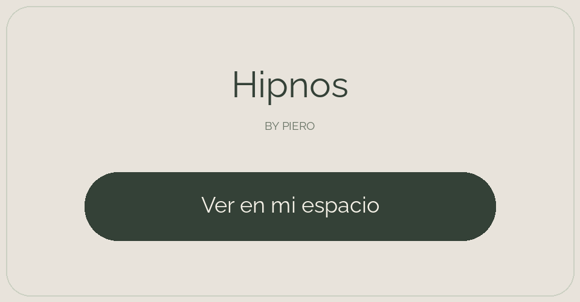

EXPLORAR EL COVER
HIPNOS BY PIERO
Visualizá el producto a tamaño real con la cámara del iPhone.

La AR utiliza Quick Look de Apple. Podés colocar el conjunto completo o un componente individual. Las temperaturas, el despiece y la circulación interactiva se exploran al volver a esta web. No detecta automáticamente el colchón ni calibra cuatro esquinas. En el conjunto, el cover queda a la altura del modelo original; la altura de tu cama puede ser diferente.
Compartí esta experiencia con un enlace o un QR.
Arrastrá para girar el producto. Pellizcá con dos dedos para acercarte y desplazá con dos dedos para mover la vista.
Modelo original, sin adaptación dimensional.
En iPhone: Safari → Compartir → Agregar a pantalla de inicio. La AR se descarga por separado y requiere un dispositivo compatible.
El hub y el control conservan sus proporciones al cambiar el tamaño del cover.
Control RF: representación funcional añadida. El archivo original no incluía su modelo tridimensional.
Las mangueras se adaptan visualmente y conectan por detrás de la cama. La posición admite un alcance limitado.